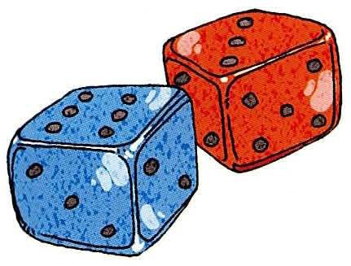
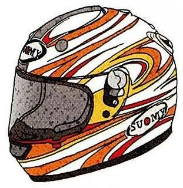
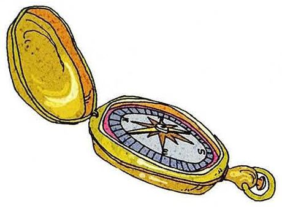
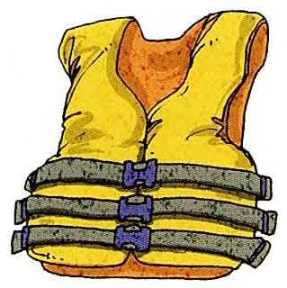
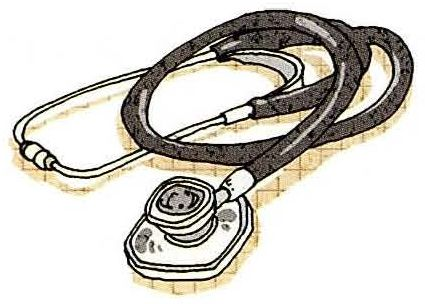
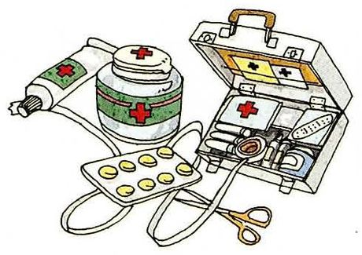
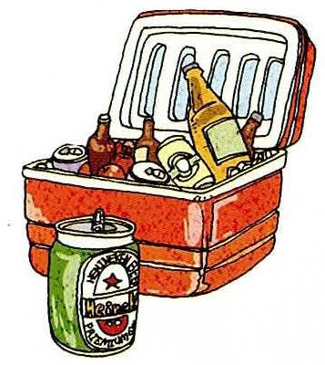
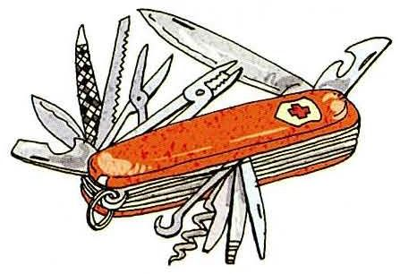
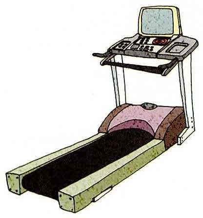
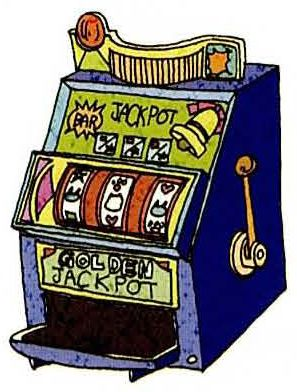

What it is — 先定性It's a small plastic card. / It's a kind of tool. / It's a piece of equipment.
What it's for — 说用途People use it when they buy things without cash. / It's for keeping your head safe.
Where or why — 补一句场景You usually see it at a casino or a convenience store. It's really common.
卡住的时候就说这句。想不起物品的英文名，不要沉默 —— 直接描述它长什么样：
"I don't know the word for it, but it's a round thing with a needle that always points north."
老师会立刻给你词（compass），这一来一回就是这节课最有效的练习。
What you see信用卡。A small plastic card, usually kept in a wallet, with a number and a magnetic strip or chip on it.
What it's for先消费后还款。You use it to pay for things without cash, then pay the bank later.
Say it like thisIt's a small plastic card that people use when they buy goods or services without cash. It's very convenient — you don't have to pay for things at once. But the interest rate is high, so if you're not careful you end up spending more than you meant to.
从课本答案里能直接拿走的地道表达
表达
意思 / 用法
goods or services
商品或服务。经济类话题的高频固定搭配，比 things 正式
pay for sth at once
一次性付清。at once 在这里是「立刻、一次性」，不是「同时」
a convenient means of doing sth
做某事的一种便利手段。means 单复数同形
problems arise
问题出现。比 problems happen 书面，但很地道
interest rates are very high
利率很高。聊钱必用的组合
encourage people to spend more
鼓励人们多花钱。encourage sb to do 高频动词搭配
be responsible about your spending
对自己的开销负责。spending 名词化的「花费」
04十个物品：图里画的是什么，怎么讲出来
每张卡三段：What you see 照着图描述，What it's for 一句用途结论，Say it like this 是可以直接念出口的整段。注意第 1 题是骰子——很多人不知道它的英文是 dice，还有单复数的问题。
01

Dice /daɪs/
What you seeTwo small cubes with dots on each side — one blue, one red. The dots go from one to six.
What it's for骰子。For games and gambling — you roll them and the numbers decide what happens.
Say it like thisThese are dice — small cubes with dots on them. You roll them and whatever number comes up decides your move. People use them for board games, and also for gambling. One of them is technically called a die, but honestly nobody says that except in writing.
02

Helmet /ˈhelmɪt/
What you seeA hard round shell with stripes and a clear visor at the front. It's the thing you put over your head.
What it's for头盔。For protecting your head if you fall or crash.
Say it like thisIt's a helmet — a hard shell you wear on your head when you ride a motorbike. It has a visor at the front you can pull down over your face. It protects your head if you crash, which is why it's actually illegal to ride without one in most countries.
03

Compass /ˈkʌmpəs/
What you seeA round golden case that opens up, with a dial inside and a needle pointing one way.
What it's for指南针。For finding which way is north when you're lost.
Say it like thisIt's a compass — a small round case with a needle inside. The needle always points north, so you know which direction you're facing. People used to carry one when they hiked or travelled, though now everyone just uses their phone.
04

Life jacket /ˈlaɪf dʒækɪt/
What you seeA bright orange vest with thick padding and two black straps across the front. No sleeves — you put your arms through and buckle it up.
What it's for救生衣。For keeping you afloat if you fall into water.
Say it like thisIt's a life jacket. You wear it over your clothes when you're on a boat. It's full of foam, so if you end up in the water it keeps you floating and your head above the surface. Boats are required to carry one for every passenger.
05

Stethoscope /ˈsteθəskoʊp/
What you seeA long tube that splits into two earpieces at one end, and a round flat disc at the other.
What it's for听诊器。For listening to your heart and lungs.
Say it like thisIt's a stethoscope. Doctors put the two earpieces in their ears and press the round part against your chest or your back. It lets them hear your heartbeat and your breathing, and pick up anything that sounds wrong.
06

First aid kit /ˌfɜːrst ˈeɪd kɪt/
What you seeAn open box with red crosses on it, and around it a tube of ointment, a jar, a blister pack of pills, a stethoscope-like tube and a pair of scissors.
What it's for急救箱。For treating small injuries — cuts, burns, sprains.
Say it like thisIt's a first aid kit — a box of medical supplies for small injuries: plasters, bandages, antiseptic cream, scissors, and usually some painkillers. You keep one at home, in the car, or at the office, and you hope you never need it.
07

Cooler /ˈkuːlər/
What you seeA red box with a lid that opens upwards, packed with bottles, and a can standing next to it.
What it's for保温箱 / 冷藏箱。For keeping drinks and food cold when you're outside.
Say it like thisIt's a cooler — an insulated box you fill with ice and drinks. It keeps everything cold for hours, so you take it to the beach, or a picnic, or a barbecue. It's not a fridge — it doesn't make anything cold, it just stops things warming up.
08

Swiss army knife /ˌswɪs ˈɑːrmi naɪf/
What you seeA red pocket knife with a lot of tools folded out of it — blades, a saw, scissors, a can opener, a corkscrew.
What it's for瑞士军刀。A multi-tool — one object that does a dozen different jobs.
Say it like thisIt's a Swiss army knife. It looks like one small pocket knife, but everything folds out of the handle — blades, scissors, a saw, a corkscrew, even a tiny toothpick. People carry one when they camp or travel, because it covers almost any small job.
09

Treadmill /ˈtredmɪl/
What you seeA machine with a moving belt and a panel with buttons at the front, and two handles on the sides.
What it's for跑步机。For running or walking indoors.
Say it like thisIt's a treadmill. You stand on the belt, press start, and the belt moves under your feet so you run without going anywhere. People use it when the weather's bad, or in a gym. The machine can also track your speed and your heart rate.
10

Slot machine /ˈslɑːt məˌʃiːn/
What you seeA tall machine with three spinning reels behind a window, a lever on the right side, and a tray at the bottom.
What it's for老虎机。For gambling — you put money in and hope the symbols line up.
Say it like thisIt's a slot machine — the kind you see in casinos. You put in a coin, pull the lever, and three reels spin. If the symbols line up in a certain pattern, you win. In Chinese we call it a tiger machine, which I've always thought was a great name for it.
05重点词汇（美式音标）
第三列是课上真正会用到的搭配。这些词你大概率都认识，重点看怎么把它们串成一句话。
A · 描述物品属性
词
音标
课上怎么用
中文
be made of
/meɪd əv/
It's made of plastic and steel. 看得出材质的用 of；看不出（如纸）用 from
由……制成
equipment
/ɪˈkwɪpmənt/
It's a piece of equipment. 不可数，要数就说 a piece of equipment
设备
device
/dɪˈvaɪs/
a small electronic device
装置
tool
/tuːl/
It's a useful tool for camping.
工具
portable
/ˈpɔːrtəbl/
It's small and portable.
便携的
insulated
/ˈɪnsəleɪtɪd/
an insulated box that keeps drinks cold
隔热的
fold out
/foʊld aʊt/
The tools fold out of the handle.
展开
B · 这十个物品的名词
词
音标
课上怎么用
中文
dice
/daɪs/
roll the dice 单数 die，复数 dice；口语里 dice 也当单数用
骰子
helmet
/ˈhelmɪt/
wear a helmet / put on a helmet
头盔
visor
/ˈvaɪzər/
pull down the visor
面罩
compass
/ˈkʌmpəs/
The needle on a compass points north.
指南针
life jacket
/ˈlaɪf dʒækɪt/
Put on your life jacket before the boat leaves.
救生衣
stethoscope
/ˈsteθəskoʊp/
listen with a stethoscope
听诊器
first aid kit
/ˌfɜːrst ˈeɪd kɪt/
There's a first aid kit in the car.
急救箱
cooler / ice chest
/ˈkuːlər/
pack a cooler for the beach 英式还说 cool box
保温冷藏箱
treadmill
/ˈtredmɪl/
run on a treadmill 引申义：a treadmill of work = 停不下来的苦差事
Okay, this one first. It's a helmet — a hard shell you wear on your head when you ride a motorbike. It has a visor you can pull down, and it protects your head if you crash.
先说定性（what it is），再说用途（what it's for），最后补一个细节（the visor）。三段下来大概 15 秒，正好是老师期待的答案长度。
Which of these have you actually used?
Honestly, only a few. I use a cooler when I go out with friends, and there's a first aid kit at home. I've never touched a slot machine — I'm not much of a gambler. And I did use a treadmill for about two months last year, until I gave up.
结构是「数字 → 具体列举 → 一句自嘲」。最后那句 until I gave up 是让回答有生活气的关键，比干巴巴地列举生动得多。
Is a treadmill really necessary? You could just run outside.
That's fair, and I'd agree for most of the year. But where I live it rains a lot in summer, and in winter the air quality is bad enough that you don't want to be running outside. So a treadmill is less about convenience and more about having a backup.
被质疑时先承认（That's fair），再给条件（but where I live…），最后把结论拔一层（less about A and more about B）。这个结构在 Part IV 会反复用到。
What would you say is the most useful thing in this picture?
I'd probably say the first aid kit. The other things are conveniences — you can live without a cooler or a treadmill. But a first aid kit is the one you really don't want to be missing when something goes wrong.
「选一个 + 说理由 + 用对比」是这类题的标准打法。对比那一步（the other things are conveniences）最能体现思路。
Do you think credit cards are dangerous?
Not dangerous by themselves — dangerous for certain people. If you pay the full amount every month, a credit card is just a convenient tool. The problem starts when you only pay the minimum, because then the interest piles up and you're basically renting money. So I'd say the card isn't the problem; the habit is.
这是课本 Credit Card 那段的核心论点，用口语重说了一遍。最后那句 the card isn't the problem; the habit is 是很漂亮的对比句，值得背下来。
If you had to describe one of these to someone who'd never seen it, how would you do it?
Let me try the compass. Imagine a small round box, about the size of your palm, that opens like a book. Inside there's a dial and a needle that always swings round to point north. So wherever you are, you know which way you're going.
✗It is used to playing games. ✓It's used to play games. / It's used for playing games.
used to + 动词原形；used for + 动词 -ing。这两个别混。而且 be used to doing 是「习惯于」，完全是另一个意思。
✗It is a thing which function is to protect head. ✓It's a thing whose function is to protect your head. / It's a thing that protects your head.
表示「它的」要用 whose，不是 which。不过口语里更简单：直接说 It protects your head，别绕定语从句。
✗It can protect your head from crash. ✓It protects your head in a crash.
crash 是可数名词，不能光秃秃用。要么 in a crash，要么 if you crash（动词）。
✗This machine's function is let you run inside. ✓The whole point of this machine is that you can run indoors.
function 是名词，后面要 is to let 或 is that…。而且口语里更常说 the whole point is…，比 function 自然得多。
✗I very like this thing. ✓I really like this thing. / I like it a lot.
very 不能直接修饰动词。really 可以，或者放句末 a lot。
✗The cooler is used to keep the drink cold, it is very convenient. ✓The cooler keeps drinks cold, which is really handy.
两个完整句子之间不能只用逗号（逗号粘连）。要么用 which 从句，要么用分号。另外 handy 比 convenient 在口语里自然得多。
08五十分钟怎么用
不用全背。按这个顺序过，性价比最高。
课前 10 分钟：只背第 02 节的五个句型尤其是 It's for + V-ing 和 You use it when…，这两句能覆盖全部十题。
上课时：每张卡的 Say it like this 念两遍重点练开头，让 It's a… 变成条件反射，后面的内容可以临场想。
想不起词时：立刻换成描述"I don't know the word for it, but it's a box that keeps drinks cold." 老师会给你 cooler，你就学到了。